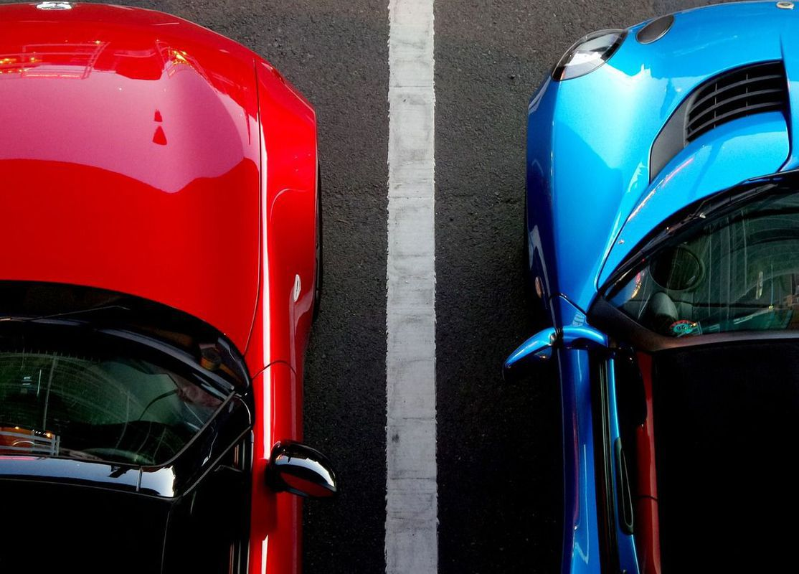
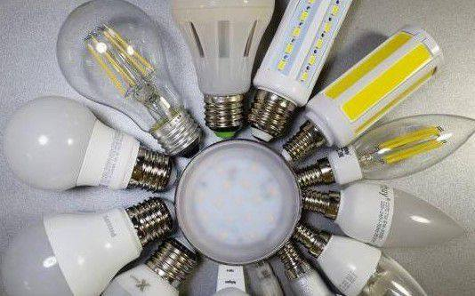
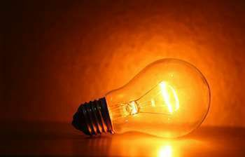
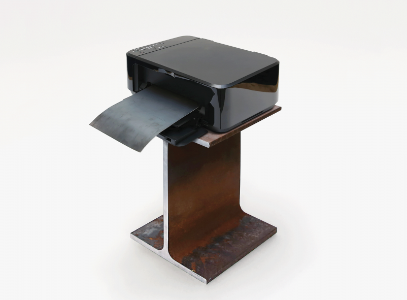

Наука і техніка
Домашня
Всі матеріали
Наука - це цікаво
🔭 хочеш бути в темі науки, новинок техніки чи розширити кругозір?
🔭пости двічі на тиждень
Всі матеріали
Космос
Техніка
Інновації
НАСА готується до запуску сонячного вітрильника на навколоземну орбіту
Представники NASA розповіли про те, що агентство готується до випробування сонячного вітрильника під назвою Advanced Composite Solar Sail System (ACS3).
05.05.2020 21:00
Астрономи знайшли придатний для дихання кисень в іншій галактиці
Астрономи з Шанхайської астрономічної обсерваторії виявили сліди молекулярного кисню в іншій галактиці.
21.04.2020 21:00

Складено рейтинг найнадійніших європейських авто, які рідше за інших відвідують сервісні центри
Для складання рейтингу було перевірено понад 200 моделей.
26.04.2020 11:51
ЧОМУ ПОТРІБНО ЗАХИЩАТИ ОЧІ ВІД УЛЬТРАФІОЛЕТУ?
Всім відомо, що сонячні промені викликають опіки шкіри, її передчасне старіння і навіть рак. Однак мало хто знає, наскільки вразливі наші очі перед шкідливим впливом сонця. Причому найбільш небезпечні для них невидимі ультрафіолетові (УФ, UV) промені.
23.04.2020 21:00
Чому більшість літаків білі?
Більшість літаків білого кольору, і це неспроста. Є кілька причин: Відивання тепла, біла фарба дешевна, запобігання зіткнення з птахами, на білому простіше побачити тріщини і вм'ятини.
16.04.2020 21:00
Ваш смартфон – це невеликий комп'ютер, підключений до інтернету.
Це дуже зручно, але телефон має такий же ризик зараження шкідливими програмами, як і повноцінні ПК.
09.04.2020 21:00

LED-світильники, світлодіодні панелі, прожектори та інші пристрої на основі світлодіодів
Принцип роботи таких ламп зовсім інший і полягає у виникненні світлового потоку в точці дотику двох речовин з різнорідних матеріалів після того, як через них пропускається електричний струм.
07.04.2020 21:00

Лампи розжарювання
До появи електрики вся трудова діяльність була пов'язана виключно зі світловим днем. В умовах сучасної цивілізації існує кілька тонових варіацій штучного освітлення, але, виявляється, не всяке світло безпечне для людських очей.
02.04.2020 21:00
Samsung анонсував камеру на 600 мегапікселів — це краще людського ока
Така камера від Samsung, перевершить навіть можливості людського зору.
14.04.2020 21:00

3D-друк по металу
Хоча звичайний 3D-друк існує вже багато десятиліть, його здебільшого використовують аматори та дизайнери, що виготовляють одиночні прототипи. А виготовлення об'єктів з чого-небудь окрім пластика було важким, довгим і дуже дорогим процесом.
31.03.2020 21:00